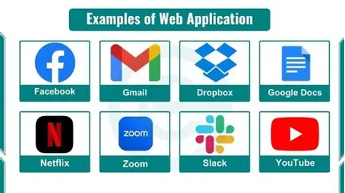

A web application (or web app) is application software that is created with web technologies and runs via a web browser. Web applications emerged during the late 1990s and allowed for the server to dynamically build a response to the request, in contrast to static web pages.
Web applications are commonly distributed via a web server. There are several different tier systems that web applications use to communicate between the web browsers, the client interface, and server data. Each system has its own uses as they function in different ways. However, there are many security risks that developers must be aware of during development; proper measures to protect user data are vital.
For Example Netflix and youtube are web applications that allow users to stream media content. They use a combination of client-side and server-side technologies to deliver a seamless user experience. Users can access these platforms through their web browsers, and the applications handle everything from user authentication to content delivery and personalization.
